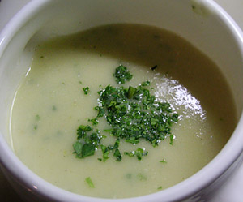

Selleriesuppe
4 von 6Ca. 500 g geschälter Sellerie und 4 Kartoffeln in Stücke schneiden und mit einer Zwiebel in Olivenöl 15 minuten andünsten. mit einem Schluck Weisswein ablöschen und etwas Gemüse-Bouillon beigeben. 6 dl Wasser hinzugeben und ca. 25 Minuten kochen. etwas Rahm beigeben und mit dem Stabmixer pürieren. Mit Salz, Pfeffer und etwas Muskat abschmecken.
